De los números perfectos a ChatGPT, de la ecuación del calor a los drones sobre un arrozal: durante una jornada completa, la Escuela y el Instituto de Matemática de la UASD mostraron que la matemática no vive aislada en la pizarra, sino que conecta con todo lo demás.
Santo Domingo, D.N. — El 15 de octubre de 2026, en el marco del 488.º aniversario de la Universidad Autónoma de Santo Domingo, el Salón de Maestría de la Escuela de Matemática acogió el Simposio de Divulgación Matemática, bajo el lema «Matemáticas que conectan: teoría, aplicaciones e innovación». El programa se cumplió completo: diez ponencias organizadas en cuatro bloques temáticos, rondas de preguntas y un panel de cierre.
La organización estuvo a cargo del Dr. Dionisio Peralta, director de la Escuela de Matemática, y del Doctorante Andradis Luna Martínez, director del Instituto de Matemática, con el respaldo de la Facultad de Ciencias.
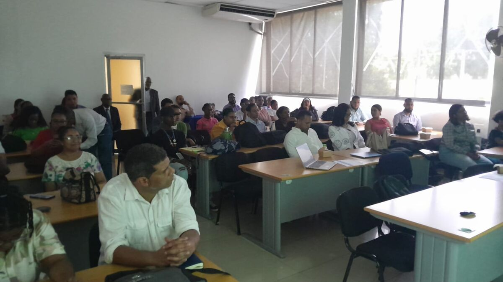
Una idea que atravesó toda la jornada
En 1623, Galileo Galilei escribió que el gran libro del universo «está escrito en lengua matemática», y que sin ella es imposible entender una sola de sus palabras. Cuatro siglos después, la frase sigue vigente, pero se ha quedado corta: la matemática no solo describe el movimiento de los planetas, sino también cómo aprende una red neuronal, cómo se propaga el calor en un sólido, cómo se distribuyen los números primos o cómo un dron distingue una hoja sana de una enferma.
Esa es la tesis que el simposio defendió con hechos. La matemática es un área neurálgica: está en el centro de la ingeniería, la medicina, la economía, la agricultura, la educación y la inteligencia artificial, y cuando falla la base matemática, falla todo lo que se construye encima. No es una disciplina que se aplica a la sociedad desde fuera; es parte del tejido con el que la sociedad funciona.
💡 Teoría, aplicaciones e innovación: un solo hilo
El físico Eugene Wigner habló en 1960 de la «irrazonable eficacia de la matemática»: ideas desarrolladas por pura curiosidad terminan, décadas o siglos después, explicando el mundo. El programa del simposio lo ilustró sin proponérselo: las sumas de caracteres y los métodos de criba de la teoría de números conviven con los métodos numéricos que resuelven ecuaciones, y estos con la inteligencia artificial que hoy se usa en el campo y en el aula. La teoría de hoy es la aplicación de mañana.
Apertura
Tras la bienvenida y la presentación del simposio, las palabras de apertura y motivación estuvieron a cargo del Mtro. Carlos Féliz Sánchez, decano de la Facultad de Ciencias. A continuación intervinieron los directores organizadores, el Mtro. Andradis Luna y el Dr. Dionisio Peralta, quienes dieron paso al primer bloque académico.
Bloque I · Jornada de la mañanaNúmeros y problemas profundos
Los números perfectos
Dr. Geremías Polanco
Un número es perfecto cuando es igual a la suma de sus divisores propios: 6 = 1 + 2 + 3, y después vienen 28, 496 y 8128. Euclides y Euler demostraron que los perfectos pares están ligados a los primos de Mersenne; sin embargo, nadie sabe todavía si existe un solo número perfecto impar. Un problema que cabe en una línea y lleva más de dos mil años abierto fue la mejor puerta de entrada al simposio.
De los residuos no cuadráticos a una desigualdad explícita de Burgess para módulos libres de cubos
Andradis Luna Martínez, Enrique Treviño, Greg Martin, Elchin Hasanalizade y Hua Lin
¿Cuál es el menor número que no es un cuadrado perfecto módulo un primo? Preguntas así conducen a la desigualdad de Burgess, una de las herramientas centrales de la teoría analítica de números para acotar sumas de caracteres. El trabajo, fruto de una colaboración internacional, busca versiones explícitas de esa cota, con constantes concretas que puedan usarse en la práctica. Es la línea de investigación del director del Instituto, de la que hablamos en este artículo.
Análisis, física matemática y métodos numéricos
Un marco espectral de Jacobi para la ecuación del calor con condiciones de frontera de Dirichlet
Juan Toribio Milané, José A. Gómez Hernández, Juan R. Holguín y Pedro N. Tifa de Jesús
La ecuación del calor describe cómo se difunde la temperatura en un cuerpo; las condiciones de Dirichlet fijan su valor en la frontera. Los métodos espectrales escriben la solución como una combinación de funciones base, en este caso construidas a partir de los polinomios de Jacobi, una familia de polinomios ortogonales que contiene a los de Legendre y Chebyshev como casos particulares.
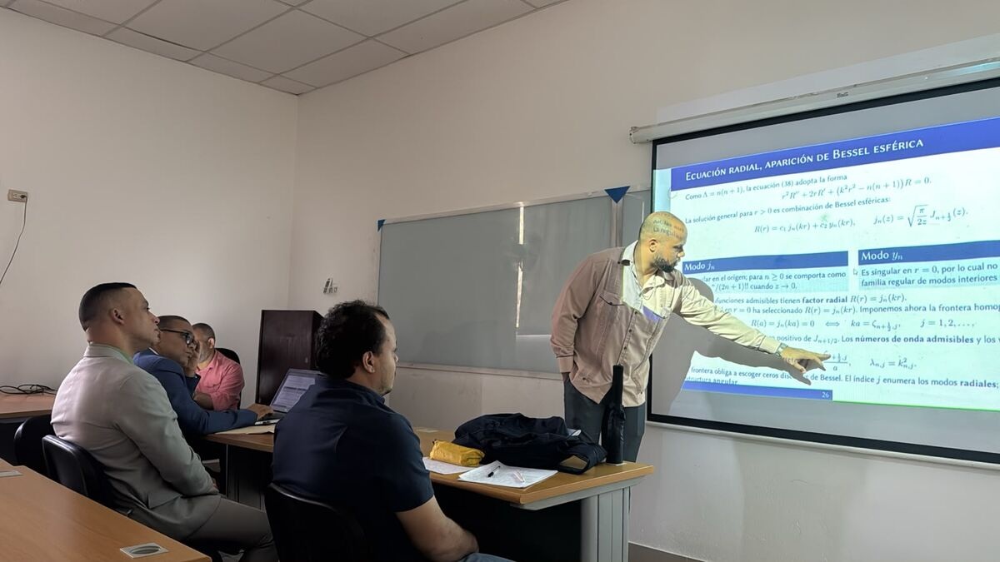
Ventajas y desventajas de la implementación del método de Newton amortiguado para resolver problemas no lineales
Dr. Antmel Rodríguez
El método de Newton converge muy rápido cuando se parte cerca de la solución, pero puede fallar cuando se parte lejos. La versión amortiguada no da el paso completo: lo recorta con un factor λ elegido para garantizar que cada iteración mejore. Esa decisión, aparentemente pequeña, es la diferencia entre un algoritmo que funciona en el libro y uno que funciona en la práctica.
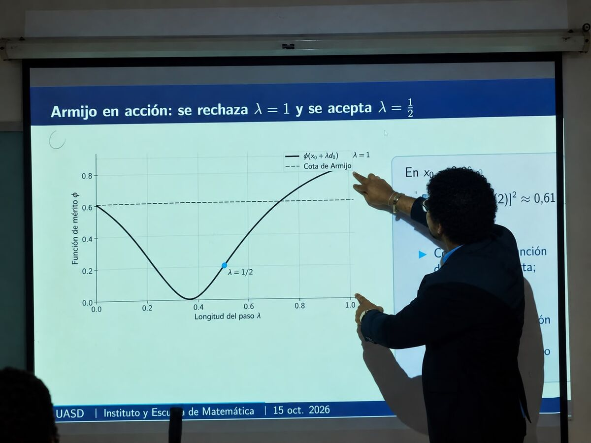
IA para la detección de enfermedades foliares en arroz y musáceas mediante drones: explorando la matemática
Robert Muñoz
El arroz y los plátanos son base de la mesa dominicana. Esta ponencia presentó un proyecto FONDOCYT-UASD que usa drones multiespectrales e inteligencia artificial para detectar enfermedades en los cultivos, y mostró la matemática que funciona dentro de una red convolucional. Puedes leer el artículo completo o recorrer la presentación interactiva.
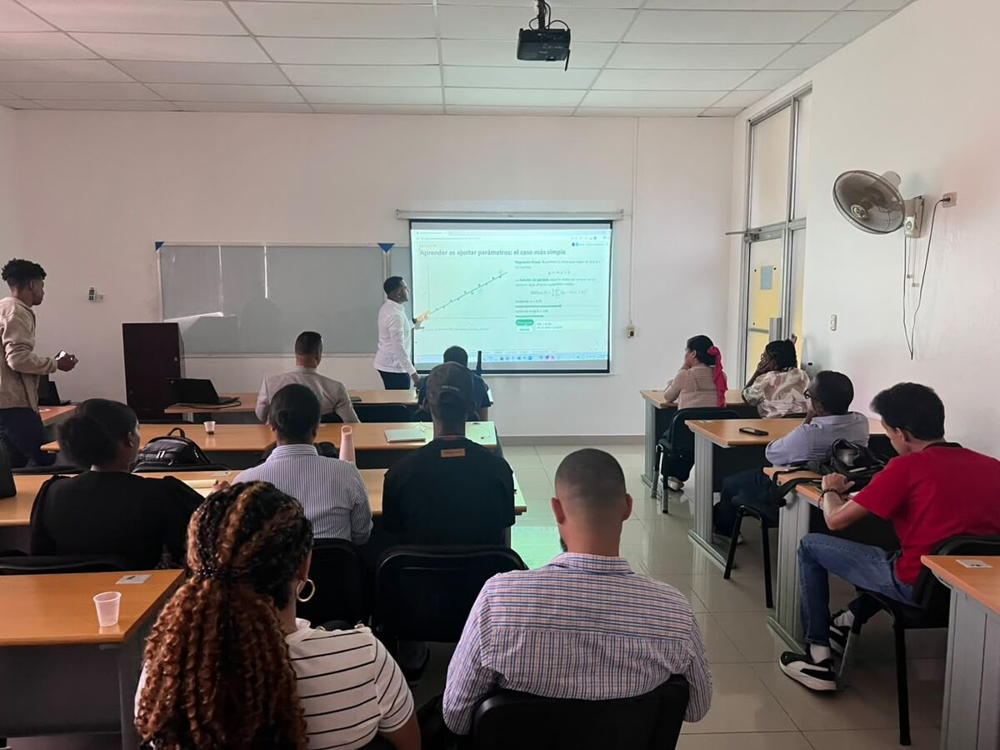
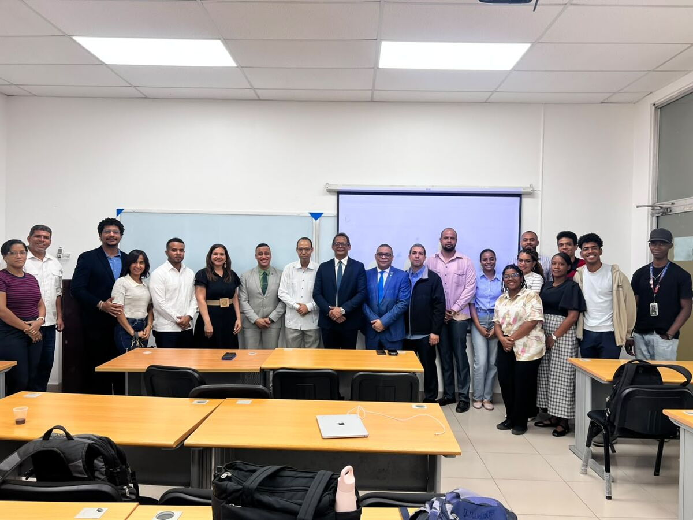
Matemáticas, inteligencia artificial y aplicaciones
Las matemáticas detrás de ChatGPT: de las redes neuronales a los Transformers
Mtro. Gerior Féliz
Detrás de un asistente conversacional no hay magia: hay álgebra lineal, cálculo diferencial, probabilidad y optimización. La ponencia recorrió el camino desde la neurona artificial más sencilla hasta la arquitectura Transformer, que está en la base de los modelos de lenguaje actuales. Si te interesa el tema, en el blog tenemos un artículo sobre matemáticas e IA y otro sobre el teorema de aproximación universal.
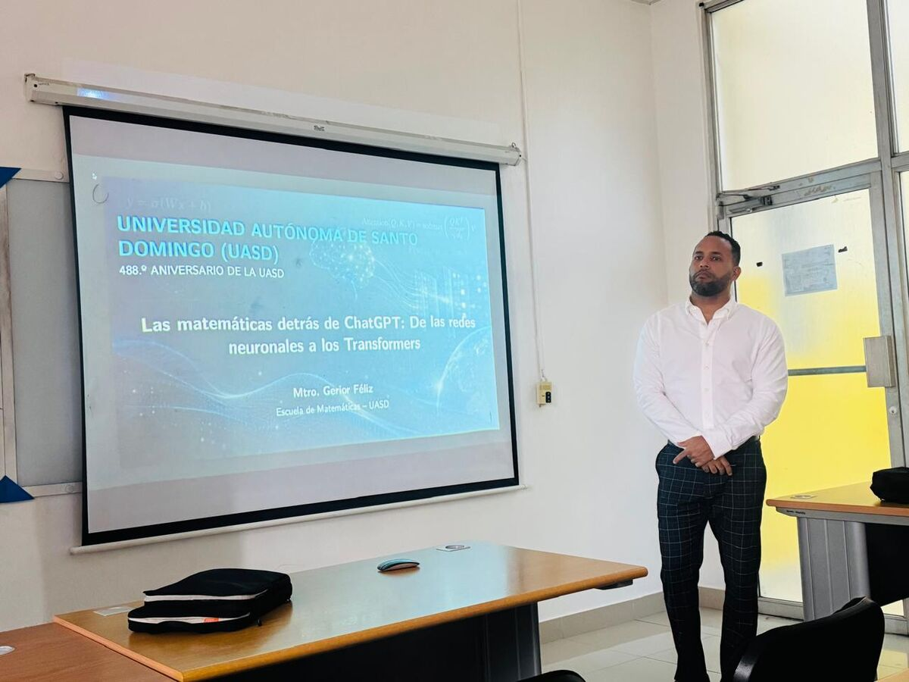
Eficacia de los recursos educativos digitales adaptados a los estilos de aprendizaje de los estudiantes de Matemática Básica
Ceyda Luz Lora y Yirkairys Beltré
La matemática también conecta en el aula. Esta investigación educativa se preguntó si los recursos digitales diseñados según cómo aprende cada estudiante mejoran los resultados en Matemática Básica, la asignatura por la que pasan miles de estudiantes de la UASD en su primer año.
Métodos iterativos basados en medias para solución de ecuaciones no lineales
Dra. Elaine Segura
Calcular la inversa de una matriz grande es costoso; los métodos iterativos ofrecen una alternativa. La Dra. Segura presentó un método basado en la media armónica que, partiendo de una aproximación construida con la propia matriz, aplica una actualización racional repetida y aproxima su inversa sin calcular ninguna de forma explícita. Una mirada complementaria a la del Dr. Rodríguez sobre el desafío de resolver lo no lineal.
Teoría de números y nuevas perspectivas
Del ocaso de las paralelas a las variedades complejas
Juan Marcial de León Reyes
Durante más de dos mil años se intentó demostrar el quinto postulado de Euclides, el de las paralelas. Cuando en el siglo XIX se aceptó que podía negarse sin caer en contradicción, nacieron las geometrías no euclidianas y, con ellas, el camino hacia las variedades: los espacios curvos que hoy sostienen la física moderna. Sobre el comienzo de esa historia escribimos en Geometría no euclidiana.
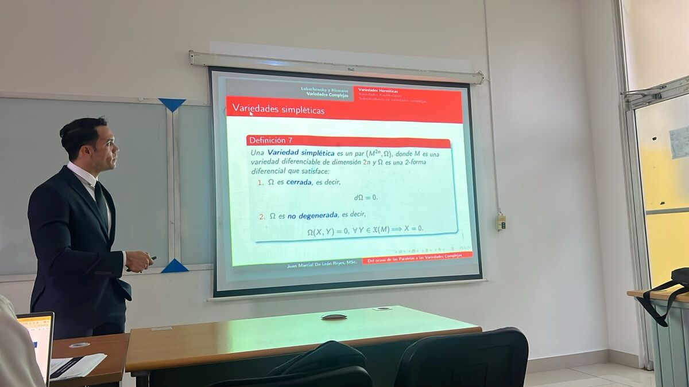
Los métodos de cribas
Samuel Morales
Todo empieza con la criba de Eratóstenes: tachar los múltiplos para que queden los primos. A partir de esa idea, Viggo Brun, Atle Selberg y otros construyeron en el siglo XX herramientas capaces de contar primos con propiedades especiales. Con ellas, Brun demostró que la suma de los inversos de los primos gemelos converge, aunque todavía no sabemos si hay infinitos.
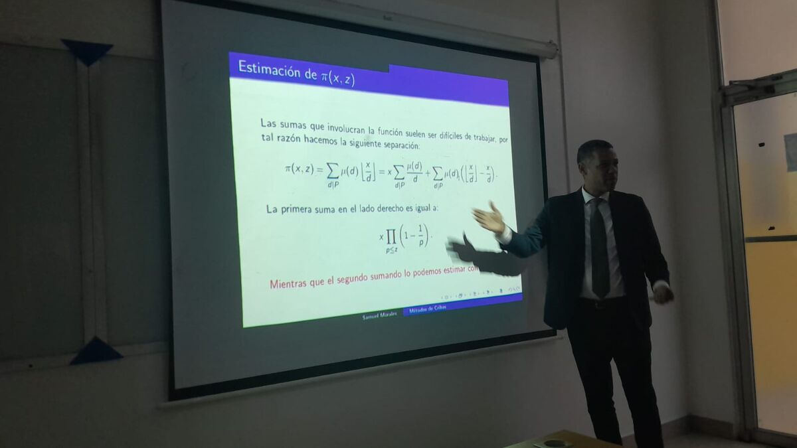
El panel: ¿por qué investigar en matemáticas?
El panel de cierre fue uno de los momentos más interesantes del día. Reunió al Dr. Juan Toribio Milané, doctor en Matemática y subdirector académico del Recinto UASD Santiago; a la Dra. Orietta Liriano, con amplia experiencia en investigación en el área de la matemática; y al propio decano de la Facultad de Ciencias, Mtro. Carlos Féliz Sánchez, que pasó de inaugurar el simposio a debatir con estudiantes y expositores sobre la investigación matemática, la formación científica y las oportunidades para los jóvenes investigadores.
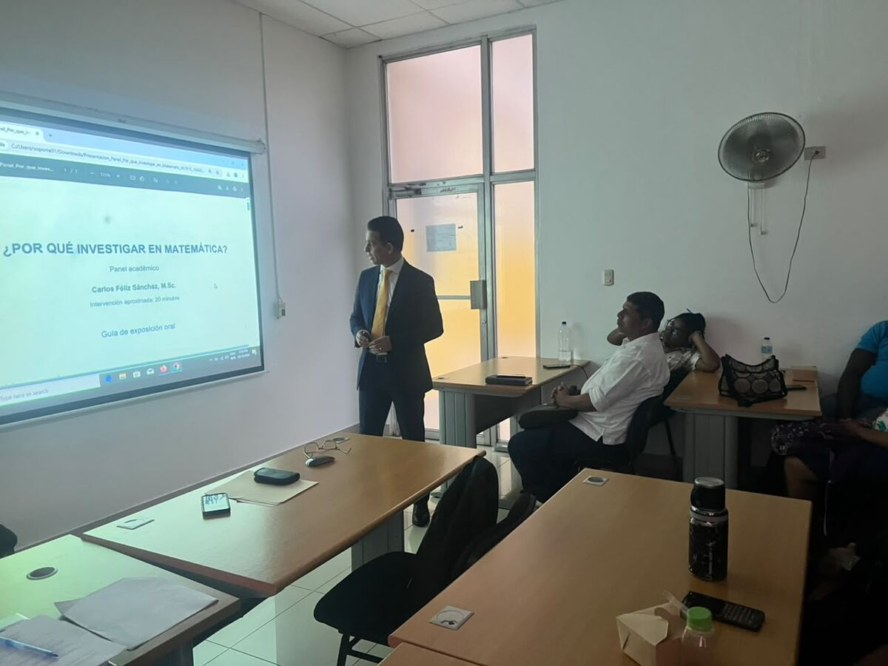
🔎 Un mensaje para los estudiantes
El decano cerró su intervención dirigiéndose especialmente a los estudiantes: «Cuando estén frente a un problema matemático, no se pregunten solamente: “¿Cómo se resuelve?”. Pregúntense también: ¿Por qué funciona? ¿Existe otra forma? ¿Qué pasaría si cambiamos una condición? ¿Puede generalizarse? ¿Qué pregunta nueva surge de aquí? Porque en ese momento comienza a aparecer el investigador».
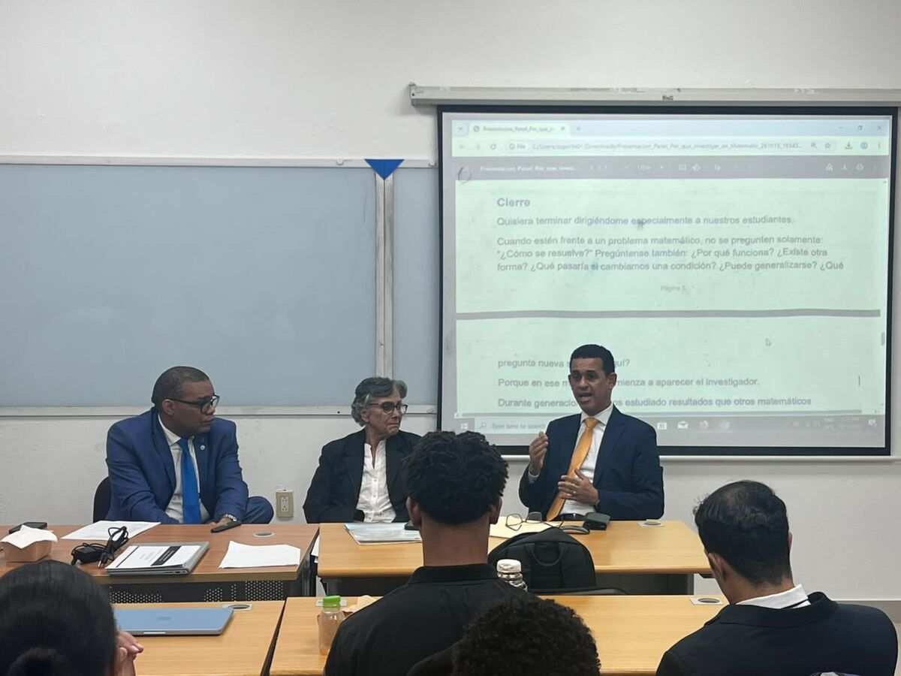
El panel se abrió después a las preguntas del público. Estudiantes y profesores participaron con inquietudes y comentarios, y el diálogo se extendió más allá de la mesa.
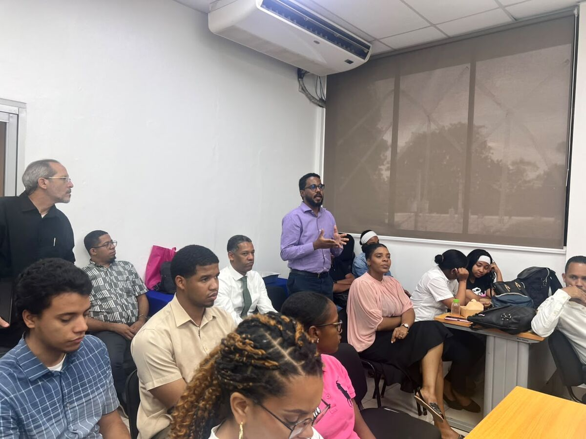
Clausura
Las palabras de agradecimiento y cierre estuvieron a cargo del Dr. Dionisio Peralta, director de la Escuela de Matemática, quien agradeció a expositores, panelistas y asistentes. La jornada terminó con la fotografía oficial del simposio.
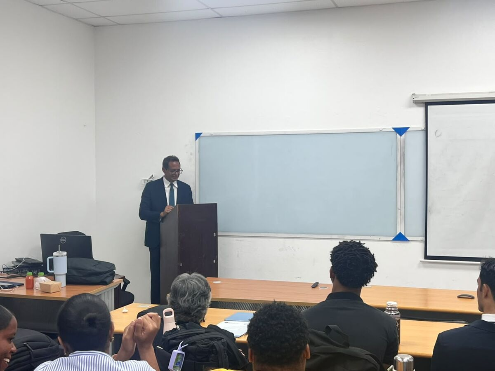
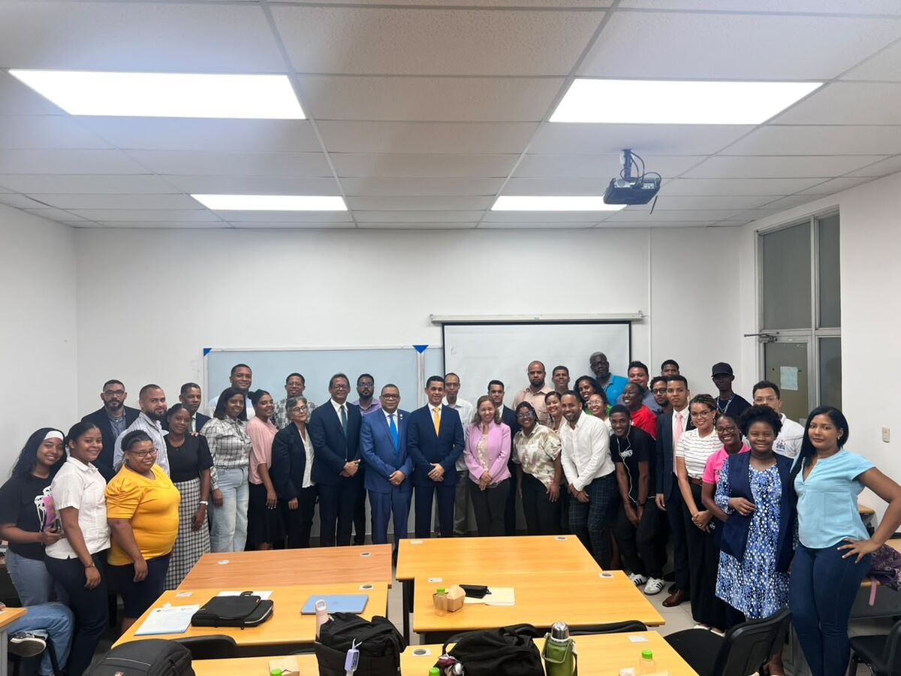
Galería de flyers y programa
Estas fueron las piezas de difusión del simposio. Toca cualquiera para verla en tamaño completo.
📄 Descargar el programa del simposio (PDF)
🎯 Conclusión
En el 488.º aniversario de la Primada de América, la Escuela y el Instituto de Matemática ofrecieron algo más que una serie de conferencias: una prueba de que la matemática que se hace en la UASD conecta la teoría más abstracta con los problemas reales del país. El universo habla en lenguaje matemático; formar a quienes sepan leerlo, y escribir en él, sigue siendo una de las tareas más importantes de la universidad.